One Bill
ONE BILL Project
ROLEUI/UX 设计 TIME2018.05-2018.09项目概述 Summary
一笔是 iOS 端的记账效率工具，通过智能预测来加速记账并降低坚持成本。获 CCCC 移动应用创新赛二等奖。
项目初衷 Motivation
记账，一个再常见不过的需求；应用市场里也不乏专业性强、功能强大的记账应用。
但并不是所有人都追求记账中的「大而全」，尤其是在快消费节奏的现在，许多年轻人已经丢失甚至从未有过记账的习惯——他们需要的是「小而精」，以更轻松便捷地养成记账习惯。
以记账三境界为模型来进行定位的话，我们关注的是年轻人需要的「第一层境界」，希望能帮助他们养成习惯、增强支出的自我意识。
- 一知：钱都去哪了 大学生&职场新人
- 二理：规划支出 有一定从业经验&压力
- 三预：为达到理想财政而调整收支 有财务管理经验&意识
项目调研 Survey
虽然有了大致方向，但是怎么帮助年轻人养成记账习惯？我们从问题的需求性和产生原因两方面出发分析，发现我们需要通过调查验证和了解的点；
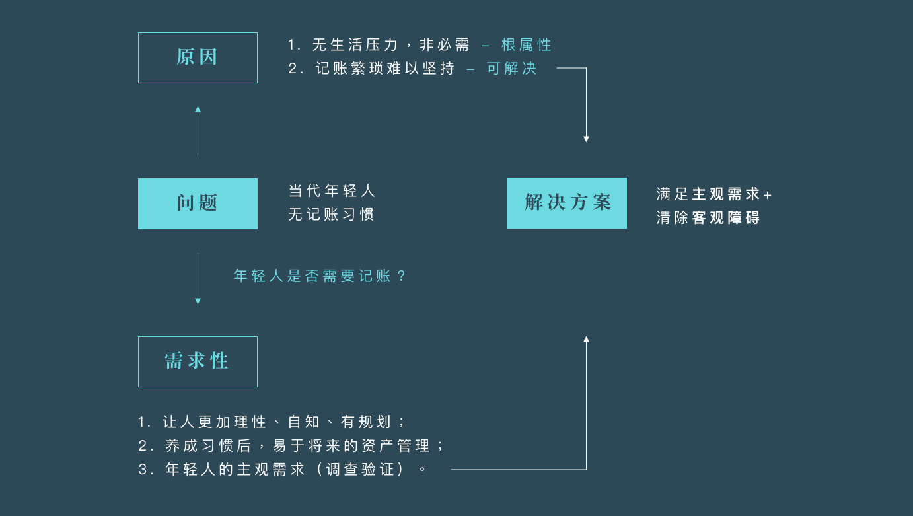基于以上初步想法，我们需要验证主观需求与了解客观障碍，并由此产出解决方案。
我们选择问卷调查的形式来进行这一步骤；问卷主要涵盖三个方面，并对样本进行年龄/稳定收入年数与消费管理意识两个维度的区分。
HOW：用户了解账目的主要方式？
- 主动记账吗？
- 支付宝/微信账单的使用频率？
- 觉得目前方式能满足消费管理需求吗？
WHAT：用户对记账的需求点是什么？
- 入不敷出的频率？
- 现在对收支的态度？
- （有记账习惯的）记账方式？
- （非移动设备记账的）不用的原因？
WHY：为何用户无法坚持记账？
- （尝试过记账的）失败原因？
- 觉得怎样的功能最能帮助记账？
- 倾向的记账应用功能完全程度？
回收了大概100份问卷，样本集中在16-22岁的学生/职场新人群体。问卷结果分析后，发现情况与我们最开始的猜想类似：
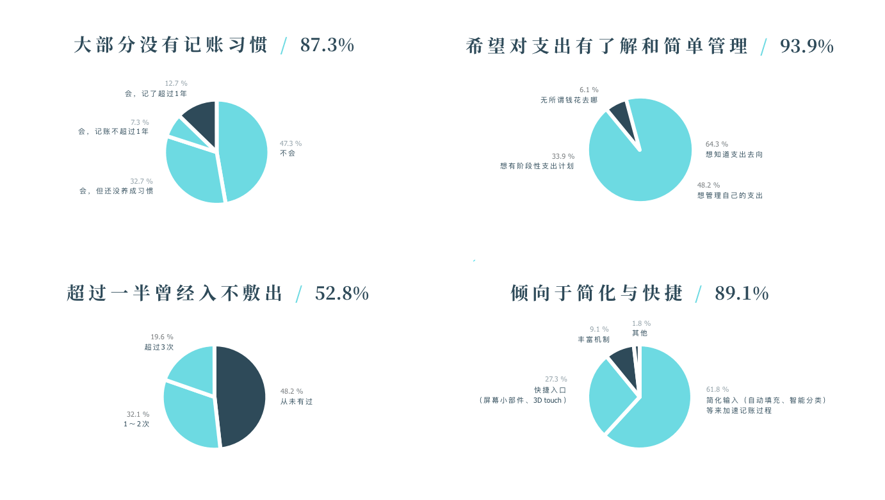由问卷结果，回答我们之前的疑问，同时确定产品定位：
想知道钱的大概去向，想简单管理自己的收支
客观障碍难以长期坚持，被动账单无法满足需求
加速记账过程，增加快捷入口，仅保留必需功能
成长型智能预测，学习用户行为；成为量身打造的记账帮手；越用越好用，降低坚持成本
体验设计 Experience
经调研确定方向后，我们从功能架构、记账流程、操作方式三种粒度，由广及细地进行体验设计。
一/ 功能上，保持轻量
不同于增加特色功能，我们考虑怎么在基础功能上做出特色。一笔重在对记账的基本功能模块进行流程优化，建立各模块间的联系，让使用更流畅、易于上手。
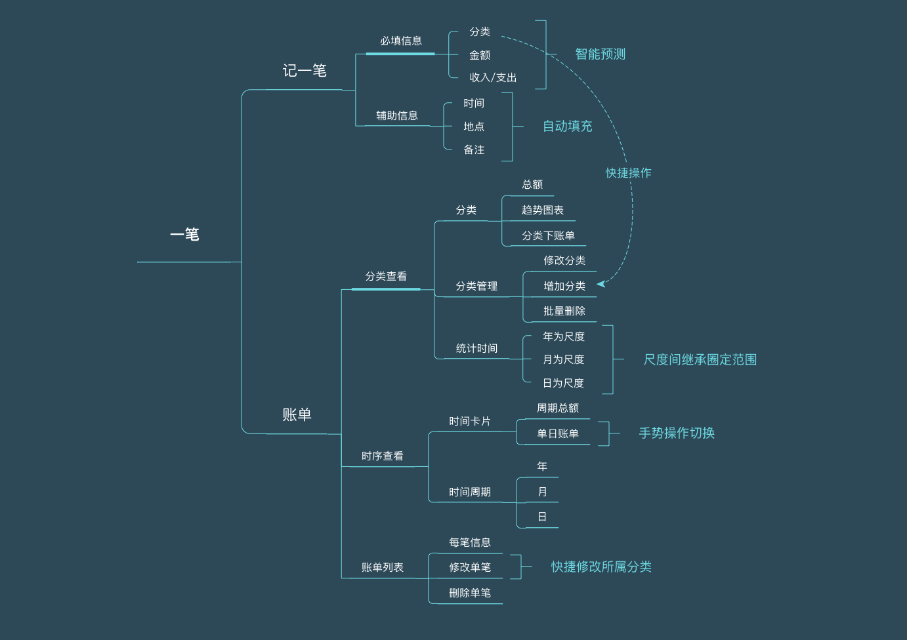二/ 流程上，易于坚持
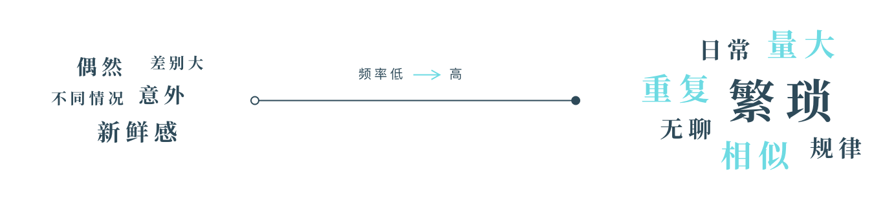我们考虑从智能、自动化的角度来减少用户的坚持成本，因此先将账目——用户记录的主体——以频率为轴进行示意，分析其两端代表特征。
频率高的账目，多重复性强且繁琐，是阻挠记账的主要部分。于是我们想到，可以分析记账记录，找出这些重复情境与对应的内容，对用户的日常重复账目进行智能预测，让用户避开在重复的时段重复地输入类似的金额、类型与备注。
这种策略也可以使一笔成为一款成长型工具，用户使用得越多，记账习惯的信息采集就越准确，日常记账也就更加得心应手，降低了坚持的成本。
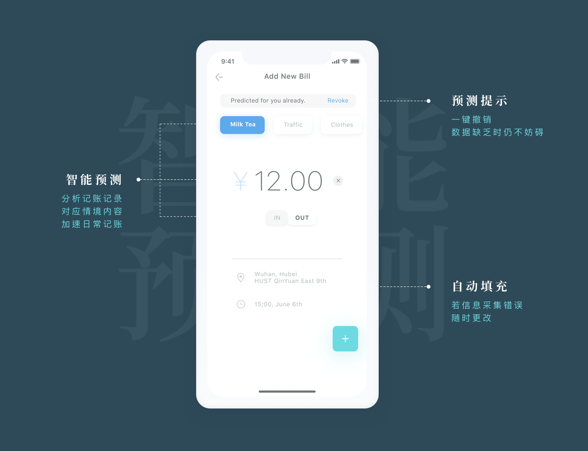三/ 操作上，手势加速
为了保持轻快的特性，我们在一笔中加入了手势操作；为保证其中的手势操作不会让用户困扰，我们提供：
- 对 iOS 标准手势的支持
- 遵循物理规律的UI暗示
- 初次使用时的引导页
 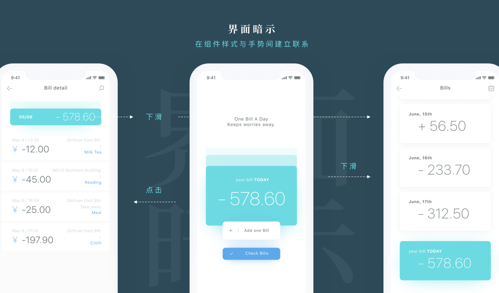
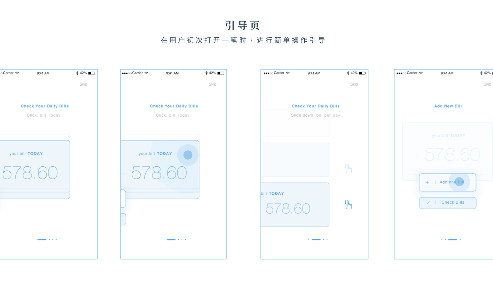
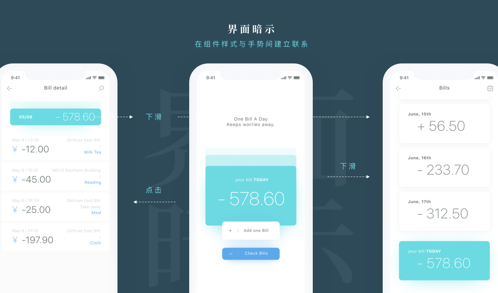
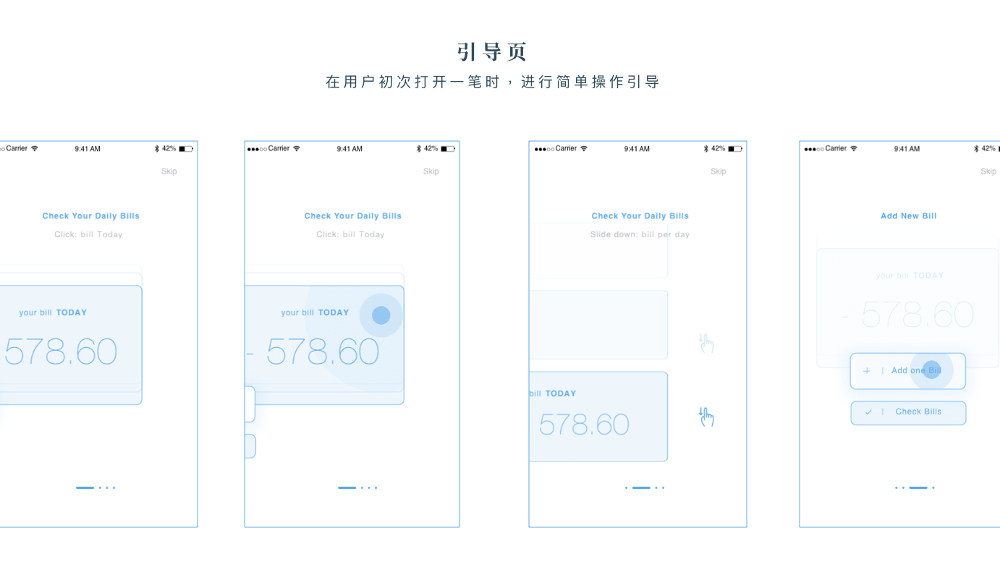
视觉设计 Visual
一/ 配色方案
一笔使用清新的湖青色与冷静的蓝色作为主色调，以搭建纯净且清爽的界面。
同时，用纯度极低的偏青深灰代替黑色作为界面的深色部分，使视觉更加轻盈，营造轻松、快捷的用户体验。
二/ 字体方案
基于Human Interface Guidelines，使用iOS 系统字体 San Francisco（SF）。
一笔的字体方案与普通应用相比，具有更多的数字项。我选择大字号与细体结合，在突出数字的同时避免失衡。
三/ 图标与样式
一笔中的图标分为两种：
- 操作性：可点击，仅描边
- 辅助性：不可点击，浅色描边与少量填充
一笔以卡片为基本组件形式，样式以10pt的圆角与低透明度的弥散阴影为基础，由此使所有界面较为一致地保持通透的呼吸感——毕竟，长期记账确实是一件有些耗费心力的事。
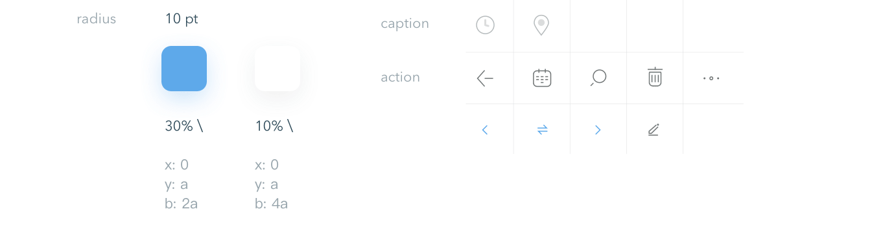界面展示 REVIEWS
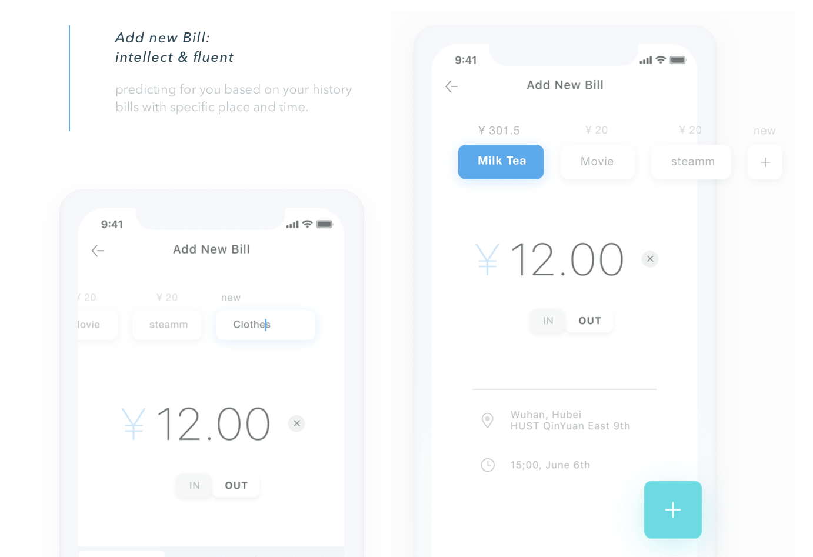 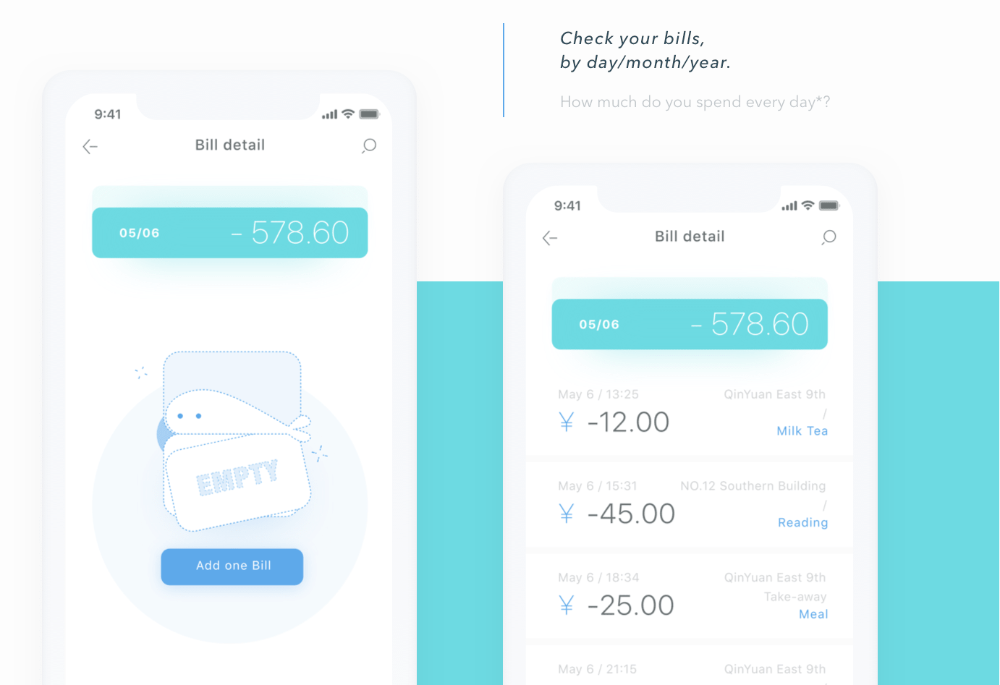 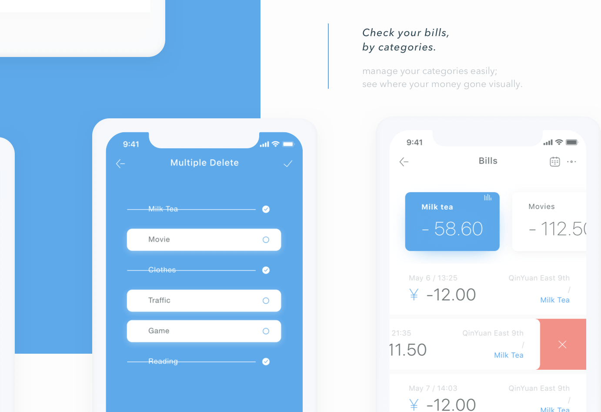 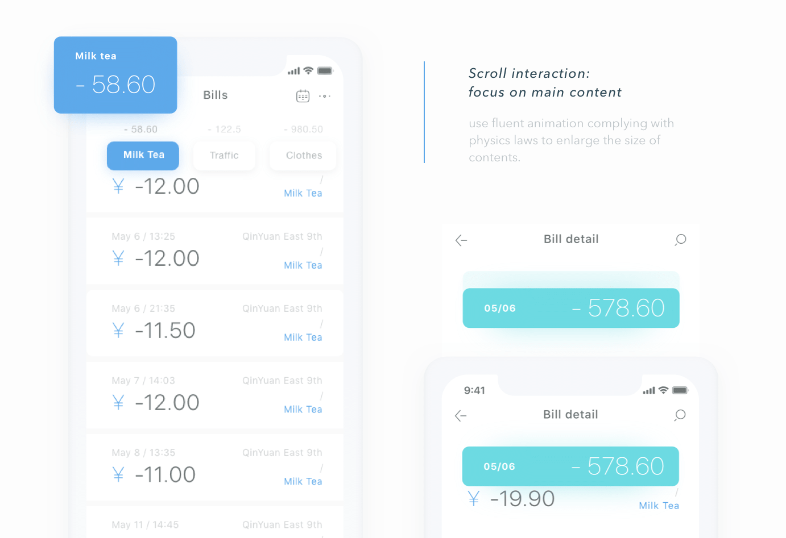
回顾与反思 REVIEWS
作为一个参赛项目，在获得二等奖后，我们仍一直在做一些完善和细节补充的工作。回顾整个项目过程，其中存在不少问题，也学到了不少：
一/ 选择与应用特征相符的视觉风格
因为金钱容易让人联想到橘黄色系，且一笔有简化过程的原则，最初的视觉设计都偏向无装饰极简+黄色系配色。
但过于朴素的元素难以建立内容间的特殊联系；同时，黄色系也容易带来焦躁感。考虑这点后，我更改了视觉方案，使界面更清爽、更轻松，同时能方便体现不同模块界面间的关系与区别。
二/ 扩展用户调研的途径
一笔的准备时间并不算长，同时受限于当时对用户调研的粗浅了解，我们调查的样本集中分布在成员的交友圈内。这使得我们的目标用户——某种程度上——就是我们自己。
虽然在这种情况下，我们理解用户行为、验证方案是否有效都变得轻松许多，但我们也局限在与自己同类的认知领域内。因此在下一次更新前，我们考虑扩展用户调研的途径，再次验证现有结果并加以改进。
三/ 从另一条路径思考
在考虑一笔的特色时，我们一度认为现在的功能过少，需要给它添加些什么才能使它具有特色——预算，提醒，或者是趣味性内容。但这些和「高效快速」相背离，将记账的流程复杂化并不利于我们解决用户的问题。
因此我们从另一个角度来思考：如何建立现有功能间的联系？如何让整个App 的使用流程更加流畅和得心应手？这才是效率工具应重点考虑的。